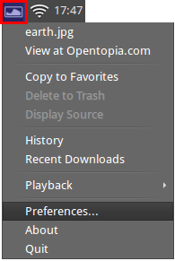
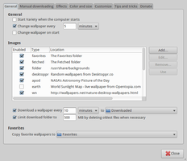
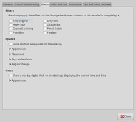
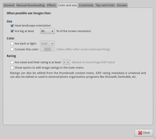

Variety
Dieser Artikel wurde für die folgenden Ubuntu-Versionen getestet:
Ubuntu 16.04 Xenial Xerus
Ubuntu 14.04 Trusty Tahr
Zum Verständnis dieses Artikels sind folgende Seiten hilfreich:
Variety  ermöglicht einen automatischen Wechsel des Hintergrundbilds mit Motiven aus eigenem Fundus oder unterschiedlichen Online-Quellen. Daneben können Zitate oder Uhrzeit und Datum eingeblendet werden. Ursprünglich für Unity und GNOME entwickelt, werden inzwischen auch die Desktop-Umgebungen KDE, Xfce, MATE und Cinnamon unterstützt.
ermöglicht einen automatischen Wechsel des Hintergrundbilds mit Motiven aus eigenem Fundus oder unterschiedlichen Online-Quellen. Daneben können Zitate oder Uhrzeit und Datum eingeblendet werden. Ursprünglich für Unity und GNOME entwickelt, werden inzwischen auch die Desktop-Umgebungen KDE, Xfce, MATE und Cinnamon unterstützt.
Das Programm wurde mit Python erstellt.
Installation¶
| Die Erde mit Sonnenstand und eingeblendeter Uhr |
Das Programm ist nicht in den offiziellen Paketquellen enthalten. Die Installation [1] erfolgt entweder über das Software-Center (variety) oder (für die aktuelle Version) mittels des "Personal Package Archiv" (PPA) [2] des Entwicklers Peter Levi.
PPA¶
Das PPA bietet aktuelle Fremdpakete an.
Adresszeile zum Hinzufügen des PPAs:
ppa:peterlevi/ppa
Hinweis!
Zusätzliche Fremdquellen können das System gefährden.
Ein PPA unterstützt nicht zwangsläufig alle Ubuntu-Versionen. Weitere Informationen sind der  PPA-Beschreibung des Eigentümers/Teams peterlevi zu entnehmen.
PPA-Beschreibung des Eigentümers/Teams peterlevi zu entnehmen.
Damit Pakete aus dem PPA genutzt werden können, müssen die Paketquellen neu eingelesen werden.
Nach dem Aktualisieren der Paketquellen kann das folgende Paket installiert [1] werden:
variety (ppa)
 mit apturl
mit apturl
Paketliste zum Kopieren:
sudo apt-get install variety
sudo aptitude install variety
Bedienung¶
 Bei Ubuntu-Varianten mit einem Anwendungsmenü erfolgt der Start [3] über den Menü-Eintrag "Zubehör -> Variety".
Die Bedienung erfolgt über einen Linksklick  auf das Programmsymbol in der Benachrichtigungsanzeige des Panels. Das Beenden des Programm, das ansonsten nach dem Start im Hintergrund weiter läuft, ist nur hierüber möglich.
auf das Programmsymbol in der Benachrichtigungsanzeige des Panels. Das Beenden des Programm, das ansonsten nach dem Start im Hintergrund weiter läuft, ist nur hierüber möglich.
Bildquellen¶
Wie inzwischen bei dieser Programmgattung üblich, können neben lokal vorhandenen Bildern auch diverse Online-Quellen genutzt werden. Zur Auswahl stehen:
World sunlight map
(das Bildmaterial von die.net wird vom Variety-Projekt intern gespiegelt)sowie alle Webseiten, die entsprechende RSS Feeds veröffentlichen (z.B. Picasaweb
 , SmugMug , deviantART , InterfaceLIFT , etc.)
, SmugMug , deviantART , InterfaceLIFT , etc.)
Such-Profile dienen dazu, die Bilderflut mancher Quellen über Schlagwörter entsprechend vorzusortieren. Mehr dazu in den Einstellungen.
Bilder aus Online-Diensten werden lokal zwischengespeichert. Bereits vorhandene Bilder werden bei Auswahl einer Bildquelle am unteren Bildschirmrand sichtbar und ermöglichen so einen Überblick, wie viele Bilder und welche Motive verfügbar sind. Die Bildquelle muss dazu nicht aktiv sein, die Auswahl (Markierung) reicht aus.
So schön der Überraschungseffekt bei der Nutzung von Online-Quellen auch ist: Lokal vorhandene Bilder haben den Vorteil, auch ohne Internetverbindung zu funktionieren. Wer keine eigenen Bilder besitzt, schaut in den Artikel Wallch.

Einstellungen¶
Die Einstellungen sind mittels verschiedener Reiter (Tabs) gegliedert. Gespeichert werden die Konfigurationsdaten im Ordner ~/.config/variety/ im Homeverzeichnis.
|  |
| Allgemeine Einstellungen |
|  |
| Effekte |
|  |
| Farbe und Größe |
Untergliedert sind die Reiter (Tabs) von links nach rechts in:
"Allgemein" - die Einstellungen unter "Preferences -> General" sind von zentraler Bedeutung. Neben der Zeitspanne, nach deren Ablauf das Hintergrundbild gewechselt werden soll, können verschiedene Bildquellen konfiguriert und (de-)aktiviert werden. Hier befindet sich auch die Möglichkeit, Variety automatisch zu starten.
"Manuelles Herunterladen" - der "Fetch folder" dient als Ziel für manuell heruntergeladene Bilder (Voreinstellung: ~/Bilder/) und ist nicht identisch mit dem Speicherort der automatisch heruntergeladenen Bilder (~/Downloads/Downloaded by Variety/).
"Effekte" - möchte man die eingangs erwähnten Möglichkeiten nutzen, Zitate und Datum/Uhrzeit anzeigen zu lassen, finden sich auf diesem Reiter die entsprechenden Optionen. Mehr Details liefert die Anleitung Configuring the Clock
. Außerdem können verschiedene Bildeffekte ausgewählt werden."Farbe und Größe" - Feintuning der automatisch gefundenen Bilder. Verschiedene Kriterien dienen als Filter:
Mindestgröße in Relation zur aktuellen Bildschirmauflösung
nur Bilder im Querformat
helle/dunkle Bilder
Berücksichtigung lokal vergebener Bewertungen
"Benutzerdefiniert" - weitere Optionen, beispielsweise zur Darstellung des Panel-Symbols oder der Facebook-Einbindung
"Tipps und Tricks" - Hinweise zur Programmnutzung und Änderungshistorie
"Spenden" - den Programmautor bei der Weiterentwicklung unterstützen
Problembehebung¶
KDE¶
Bei KDE bzw. Kubuntu setzt man in den KDE-Einstellungen ~/.config/variety/wallpaper-kde.jpg als Hintergrundbild. Variety schreibt diese Datei beim Bildwechsel neu, worauf KDE das Hintergrundbild automatisch aktualisiert.
Links¶
Wiki
- Dokumentation
Install Variety wallpaper changer 0.5.4 in Ubuntu 15.10, 15.04
- Blogbeitrag, 08/2015Variety Wallpaper Changer for Ubuntu 13.10/13.04/12.10/12.04
- Blogbeitrag, 07/2013Desktop-Hintergrund
 Programmübersicht
Programmübersicht
- Erstellt mit Inyoka
-
 2004 – 2017 ubuntuusers.de • Einige Rechte vorbehalten
2004 – 2017 ubuntuusers.de • Einige Rechte vorbehalten
Lizenz • Kontakt • Datenschutz • Impressum • Serverstatus -
Serverhousing gespendet von